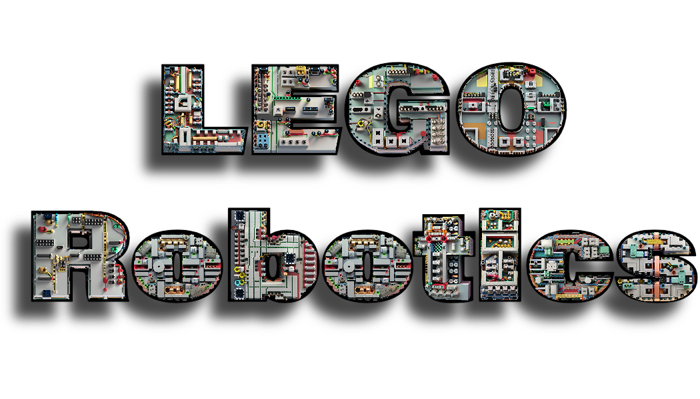

Copy the link address for your kit. In the editor, choose Add Extension, select Extension Loader, and paste the address.
To connect without Scratch Link, open this site over HTTPS in Chrome or Edge. Turn on the figure or hub and put it in Bluetooth pairing mode. In the editor’s connection dialog, click Start Searching and select your device in the browser’s Bluetooth picker. If macOS asks, allow your browser to use Bluetooth.